Annapolis Group Inc. v. Halifax Regional Municipality
This transcript was made with automated artificial intelligence models and its accuracy has not been verified. Review the original webcast here.
Justice Rowe (00:00:00): The Court. La Cour.
Justice Wagner (00:00:05): Good morning, good morning to all.
The case of Annapolis Group Inc. against Halifax Regional Municipality.
For the appellant, Annapolis Group Inc., Peter H. Griffin, Rebecca Jones, Scott Rollwagon, Amy Sherrard.
For the intervener, Canadian Constitution Foundation, Malcolm Lavoie and Adrianne Funk.
For the respondent, Halifax Regional Municipality, Michelle Awad, QC, Martin Ward, QC, Jeremy Ryant.
For the intervener, Attorney General of Canada, Dana Anderson.
For the intervener, Attorney General of Ontario, Robert B. Lawson and Vanessa Glasser.
For the intervener, Attorney General of British Columbia, Fong Phan and Tim Quirk.
For the intervener, Eco-Justice Canada Society, Rem D. Christensen and Sarah McDonald.
Mr. Griffin.
Speaker 1 (00:01:17): Thank you, Chief Justice.
Just for the court’s assistance, I will be making the primary arguments.
My colleague, Ms. Jones, will deal with the reply.
Overlapping speakers (00:01:27): Farewell.
Speaker 1 (00:01:27): The Court of Appeal tells us that Annapolis land must be actually taken by Halifax Regional Municipality and acquired by it before a de facto expropriation can be made out and hence the evidence on this partial summary judgement motion as to HRM’s conduct and intentions which HRM did not contest but will not admit is neither material nor relevant.

In my respectful submission if that is the test that eliminates the common law de facto expropriation or constructive taking remedy as commentators have pointed out and we say is bad policy.
The common law case law including in this court before and after this court’s decision and CPR recognizes that there may be a taking which requires compensation when there has not been an actual de jure expropriation of property.
Justice Wagner (00:02:26): So Mr. Griffin, to understand you correctly, you don’t ask us to overturn CPR.
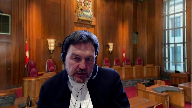
What you’re asking, what you’re saying is that it’s a question of application of the same learning and probably the definition of what we call the beneficial interest and the notion of taking.
Is that right?
Speaker 1 (00:02:48): You have my point, Chief Justice.
I say that, first off, the cases have, before and after CPR, have approached it more broadly than the way that test is expressed.
But even within the CPR test, as it was expressed by the Chief Justice, the concept that the Court of Appeal applied has no home.
So what I ask the Court to do is simply clarify and to take it to its point.
I say replace beneficial interest with benefit flowing from the property.
And that’s consistent with the cases before and after, tenor, Manitoba Fisheries, and also your decision in the Lorraine case.
And I appreciate that that is not something we necessarily have to reconcile to.
But it brings us into a coordinated approach to what was described in Lorraine as disguised expropriation.
Justice Côté (00:03:44): Mr. Griffin, on that, to follow up on the Chief Justice question, so you are not asking us to overturn CPR, you are asking us, in fact, to interpret the expression beneficial interest, I would say more in a colloquial sense than a technical sense.
Do I understand your position? Correct.
Speaker 1 (00:04:04): Overrolling is violence to private, prior authority, which is not necessary here.
When one actually reads the passage of the Chief Justice and CPR, she was not talking about an actual transfer of property.
She was talking about benefits flowing from the property.
And that brings it in line with the earlier cases and other cases such as Lynch and the Newfoundland Court of Appeal, where what was not taken was the land, but merely the flow of groundwater from it.
So I say you can reconcile CPR to the cases before and after, and I call it smoothing the curve, for want of a better way of saying it, in order to bring it in line to and better reflect the policy behind the decision.
Justice Côté (00:04:55): We have another, oh sorry, I just have another question for you.
We are dealing here in the context of a summary judgment motion.
We are not dealing with the merits of the case.
So in your view, the Court of Appeal states the standard of review from the motion judge decision in paragraph 30 of this decision.
But what are your views on the standard of review applicable to such a decision on a motion judge on a summary motion?
Speaker 1 (00:05:24): Well, I say that in this case, the standard of review should be very deferential to a motion judge looking at the standard which is to be applied and whether there are material facts requiring a trial.
I also say there should be extraordinary deference to the motion judge’s determination of proportionality relying on this court’s decision on the scene because the motion judge quite properly embraced the notion that this case was going to trial, going to trial in any event, Justice Cote, on other causes of action to which as well, the evidence to which I will come is material to determinations of material fact.
And the one inescapable factor in this case, Justice Cote, is that the voluminous evidence that was led by the respondent on the motion was uncontradicted.
You see some quibbling in the respondent’s factum about that now.
We’re a long way down the road to be having that discussion, but all it really tells you is that we have material facts in dispute and that the motion’s judge determined.
Justice Kasirer (00:06:35): Mr. Griffin, I’d like to come back to the initial question of the Chief Justice and the follow-up of Justice Quote, because while you may not be asking formally for CPR to be overruled, I think you are asking, and I may be wrong here, for us to retreat from CPR and its strictures, and that beyond the issue as to whether beneficial interest does or does not speak to title, I don’t think there’s a big debate that the landowner can hold title but lose use and that beneficial interest can be taken by the public authority.
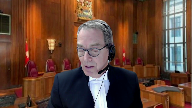
I understood your position to be arguing for a softening of the test as it’s been applied to and including your invocation or your reading of Lorraine, so I’m wondering if it’s a little disingenuous to just say this is a mere application of a rule.
I think, but I’m happy to be told that I’m wrong, that you’re asking for us to diminish the rigors of the test.
Speaker 1 (00:08:09): In my respectful submission, read properly, CPR allows for a broader reading.
I call it a clarification because you can’t read CPR as saying that there has to be a conveyance of title.
It refers to a beneficial interest and the beneficial interest in my respectful submission is not explained in the decision.
So I don’t believe it’s a disingenuous approach.
It’s an approach seeking clarification by this court of its decision in CPR because the reading of it that the Court of Appeal took led it to conclude that there was considerably more, that there had to be a conveyance, if you like, or a transfer of the property interest.
And in my respectful submission, it doesn’t go that far.
And so really what I ask is that it is brought, be brought in line with with the earlier decisions of this court, Manitoba Fisheries and Tenor, and that it be brought into line with the subsequent decisions, including Lorraine.
So I hope that’s…
Justice Jamal (00:09:10): clear.
On the issue of deference, Mr. Griffin, why would one take a deferential approach to a decision that considers a legally irrelevant factor, that is the issue of motive for example, and secondly if there is a finding that if there is the evidence that is said to give rise to the loss of all reasonable use this isn’t actually relevant evidence that bears on that, again why should there be deference to that?
I understand that generally one should of course defer to determinations but when they essentially amount to errors of law it seems to me we’re in a different category of case.
Speaker 1 (00:09:50): Justice Jamal, in my submission, the Court of Appeal concluded that motive was irrelevant by virtue of the tests that it applied because it said there had to be an actual transfer and therefore nothing that occurred with respect to the conduct of HRM short of a transfer could be legally relevant.
In my respectful submission, intention is always a part of the analysis, whether you call it motive or whether you call it intention.
If you go back to Ulster Transport, what the court there focused on was the intention of the authority in passing the relevant legislation to take over the transportation business.
That’s indeed what was applied by Justice Ricci in the Manitoba Fisheries case.
And I say against the proper test, intention does matter.
The Court of Appeal, secondly, took the position that this was simply a matter of zoning.
And as a matter of zoning, intention again didn’t matter.
I say it’s far broader than that because the factual matrix in this case, not the factual matrix that this court has to decide or the judge in the first instance or the Court of Appeal had to decide, is something for the trial judge on all of the circumstances to determine whether the conduct in conjunction with the use as a park is a matter that goes to prove de facto expropriation.
So I say against the right test, it does matter.
Justice Côté (00:11:22): Establishing on this on this motive question, am I right to think that the Court of Appeal went further, they equated motive to bad faith?
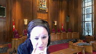
And if I understand your position correctly, motive is just the intent and not necessarily bad faith, because the Court of Appeal said that all that part of the evidence was relevant for the other part of your claim based on misfeasance in public office.
But I think that they equated motive to bad faith, and I don’t think that on your expropriation de facto claim, you are just limiting yourself to intent.
No, I don’t think it goes so far as bad faith.
Speaker 1 (00:12:03): You
Overlapping speakers (00:12:03): Yeah.
Speaker 1 (00:12:04): I think that the Court of Appeal leapt over the notion of intention.
Motive perhaps is emotive, if I can put it that way.
Justice Cote, it perhaps implies more than it needs to imply.
I think perhaps a better way to deal with it is the way Ulster dealt with it, Manitoba Fisheries dealt with it, to say that it is a matter of intention.
Overlapping speakers (00:12:23): OK, thank you.
Speaker 1 (00:12:24): And I say that you have to look at all of the conduct and that’s what the trial is about.
Justice Karakatsanis (00:12:31): Can I ask you about where the potential for a novel legal issue fits into the summary judgement framework because the case law has always recognized that we can’t cut off the opportunity to argue a change or a clarification or a different application of the law.
So I’m trying to reconcile your, you know, we’re seeking a clarification, there’s no change in the law, with the deference that you’ve talked about and proportionality in summary judgement proceedings.
Speaker 1 (00:13:14): Justice Karakatsanis, I’m mindful of the pitch of the road, the more one heads to the question of overruling versus clarification, if I can call it that, and I, I eschew uphill grades as much as I can possibly do it.
But what I dance to your question directly what what the motions judge described was that there are creative applications of the principal in the various cases, and that was one factor he took into consideration and allowing the matter to go forward.
And so there should always be room for the creative interpretation, not outlandish not beyond the pale.
But what we’re talking about is an exercise in which neither the motions judge, nor the Court of Appeal or this court is weighing the evidence, making findings of fact, or drawing particular inferences but rather looking at the overall factual matrix to determine if they’re material facts.
So there should always be room for the creative as to whether the next set of facts get you there.
And of course these cases are all over the place if I can say that in the vernacular, you know, it may be a license or a mineral right.
It might be water groundwater that one has.
It might be a right to exploit the fisheries business.
And when you look at the cases that are before the court.
They are all a different fact situation, and the court has to balance and come to the right result with respect to whether de facto expropriation is made out.
Justice Rowe (00:14:49): I mean, the other thing that occurs to me is that traditionally, and this goes back a very long ways, a subject, now the term which we use would be a citizen, who felt that they had been oppressed by some action of the state, could always turn to the courts to seek relief.
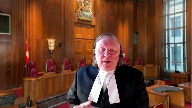
It doesn’t mean they always obtain relief, but the courts were an avenue whereby they would have a just and independent adjudication.
And to say the door is barred, we will not even hear your claim against these actions by the state, it really, I think, runs against the whole traditional view of the courts as somehow a guardian of the rights of citizens vis-a-vis what could be on occasion, the state’s heavy-handed use of its authority.
Speaker 1 (00:15:48): Justice Roe, one of the advantages of the common law cause of action, if I can call it that, the tort of de facto expropriation, is it makes that available in the appropriate circumstance and it also addresses some of the confusion one sees in the cases in which courts, right back to the Sisters of Charity of Rockingham, have talked about the fact that one has to nest oneself within expropriation legislation and of course that, if you like, exacerbates the problem and so as we say in our factum back to Blackstone, the type of principle you’re describing was recognized and nothing that has occurred since should take away from the application of that principle.

So the clarification I seek with respect to CPR is to make sure that that principle is clear so that those who are dealing with these types of cases has a better expression of what is and isn’t necessary, which then defines the material facts and dispute in our subject matter.
Justice Moldaver (00:16:52): clear, could I just ask you this because this is troubling me, is it your position, and I think it is, that if we define beneficial interest as we find in former Chief Justice’s language, if that requires, if that is meant to be a property interest, an equitable interest, then don’t you have a de jure appropriation, and what are we talking about in terms of de facto?
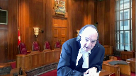
So if we look at it from that perspective, surely the Chief Justice could not have meant that, and so that you’re looking at some kind of an interest, like an interest that benefits the other side, and looking at the nature of it and so on, but if we give it the interpretation that it requires an equitable interest of some sort, or something flowing from an equitable interest, then we’re just going around in circles it seems to me, but do I have that right or no?
Speaker 1 (00:17:59): You do, because Justice Moldaver, my submission is that if read literally that it is a property interest essentially means that it has to be a de jure expropriation and that eliminates the common law cause of action.

And in my respectful submission that’s simply bad policy.
Justice Brown (00:18:18): One of the interesting things about CPR in Vancouver is it cites to tenor and really says nothing more about tenor and I’m wondering if that is something that we should pay attention to in deciding what is intended by beneficial interest because it’s important to remember that the plaintiff and tenor wasn’t a registered title holder.
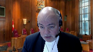
He was the holder of a charge, a mineral claim, so this wasn’t a taking of title, it was an interference with his right not to hold because the Crown hadn’t actually acquired anything.
The Crown had simply succeeded in achieving its purpose of restricting mineral extraction by barring access and so not the right to hold but the right to use that property in the way the claim holder could use it, in the only way the claim holder could use it.
And I’m wondering if that point that this was about use as opposed to the right to hold gives us some way to give meaning to beneficial interest in a way that is respectful of tenor which it expressly cites to in CPR in Vancouver as well as CPR in Vancouver itself.
Speaker 1 (00:19:37): Justice Brown, the passage that you refer to of the Chief Justice is at tab 16 of our condensed book and it perhaps is worth a stop just to assist us with the discussion that we’re now having.
Because if you look at page 54 of the condensed book, the Chief Justice says for a de facto taking requiring compensation of common law, two requirements must be met.
The first is the acquisition of a beneficial interest on the property or flowing from it
and I say you have to read that too in light of your question and secondly the removal of all reasonable uses of property and refers to the three decisions but the next paragraph but one is also instructive.
First CPR is not succeeded in showing that the city has acquired a beneficial interest related to the land.
To satisfy this branch of the test it is not necessary to establish a forced transfer of property.
Acquisition of beneficial interest related to the property suffices and there is a reference to Manitoba and again to Tenor and so I say reconciling CPR with Tenor for example takes into account the very point you’re making which is that the appellant in that case, I’m sorry the claimant in that case was unable to access their mineral rights by virtue of the lack of a permit to do so and certainly in Tenor it was not the case that what the government received, what the crown received was the property interest in the mineral rights.
They remained at all times with Tenor.
They were simply inaccessible and hence eviscerated.
Overlapping speakers (00:21:31): Okay, thank you.
Justice Martin (00:21:33): Mr. Griffin, could I get back to what it is that you’re asking this court to do?
As I understand it, you say the thrust of your factum is that CPR is no longer to be read as strictly, that beneficial interest, although clearly enunciated in the decision and clearly applied in that decision to deprive de facto or constructive taking.
You’re saying it’s a decision that’s limited and should be restricted to its facts.
You’re telling us that it needs to be read in light of Manitoba fisheries and tenor and the existing jurisprudence.
And then you’re telling us that it should be read subsequently in terms of Lorraine, some Quebec and some Newfoundland cases.
Aren’t you really asking us to overrule this rather than distinguish the case or clarify it?
Speaker 1 (00:22:33): I suggest not because I say that the thrust of the language in CPR read in the context of that case does give directionally the indication to the court of what the Chief Justice was speaking to and it is broader than the conveyance of a property interest as such because it talks of an interest flowing from a beneficial interest.
So in my respectful submission if you ask what that could be it’s not necessarily a property interest.
So on its facts and I accept what you say Justice Martin on its facts it is a case which has to be looked at carefully as these are all fact-specific cases which is why general guidance is so important but in terms of
Justice Wagner (00:23:17): In terms of facts, Mr. Griffin, could you tell us exactly what are the uses of Annapolis now?
What kind of use can Annapolis do with the lands?
Speaker 1 (00:23:31): I say no reasonable use outside of service development.
I say that’s admitted by HRM on the evidence and I have that excerpt at tab seven of the condensed book in which what is admitted is that there is no reasonable practical or economic use and that begins at page 25 of tab seven and the examination for discovery evidence of Ms. Denty of HRM.
So no practice and I’m right down at line 19 Chief Justice no practical or reasonable development potential for those lands very minimal development not practical very minimal you wouldn’t recommend it I wouldn’t do it unlikely to be economical I would agree.
Overlapping speakers (00:24:19): Yeah.
Speaker 1 (00:24:19): And that’s the only when I say the only practical use
and I say that’s not really contested here is service development this land was intended for service development from the moment that it found its way into HRM.
Justice Côté (00:24:35): Mr. Griffin, but Halifax is responding to that, that nothing has changed.
It was intended from the beginning to be service development and it’s still the situation today.
How do you respond to that?
Speaker 1 (00:24:50): So my response to that is essentially this.
If you rely on the test that was applied by the Court of Appeal, it’s true that the zoning hasn’t changed from 2006 to 2016 when the decision was made, but we say that the obligation with respect to the land was contained in the Regional Municipal Planning Strategy and the Regional Municipal Planning Strategy contemplated this land coming forward for service development.
We say that they have to look at the entire factual matrix to determine what happened here because there’s a process and there’s a contemplation and a statutory requirement of compliance with the planning strategy going forward, including to the point of the September decision.
And in my respectful submission, what’s happened here is explained by the circumstances that I’m going to come to now with respect to the facts, which goes to the intention of HRM.
So looked at on that context, it’s too narrow an application to simply say the zoning hasn’t changed.
That’s not what this de facto expropriation case is about.
That’s what the evidence will go to when we get to trial.
And Mr. Griffin, may I…
Justice Martin (00:26:11): And may I just follow up on that?
If we are not inclined to adopt the clarification that you suggest, all right, if that’s a step too far or whatever, what do you say about still meeting the test of a stricter beneficial interest given the affidavits that you have?
I mean, the thrust of your factum seems to be we need a change or a reinterpretation of the test to succeed.
And I’m wondering if that’s the only position you’re advancing or whether you’re saying even under beneficial interest, given the evidence that we’ve put forward, we should be allowed to proceed.
Speaker 1 (00:26:58): I can’t see what that’s in.
I say on a proper application of the CPR test, on an application of the CPR test, the benefit that has accrued to HRM of using my client’s land as a park should meet the test.
I can’t meet the test the court of appeal espouse, but that’s not the test in CPR.
Justice Rowe (00:27:24): Just a methodological point, one that my colleagues Justice Brown and Justice Martin have come at perhaps from different angles.
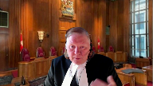
One of the first things, the first step you have to do if you’re saying, what is the precedent, is you have to say, well, what is the ratio of the case?
And then you say, well, what is the rule that flows the ratio?
And then are you departing from that or not?
And it’s interesting in this case, when former Chief Justice sets out a series of propositions that you’ve extracted for us at page 54 of your book, the authority for the propositions she sets out are a number of cases.
And she doesn’t say, and thus I am signaling a departure from this earlier jurisprudence.
She’s signaling continuity.
And she’s signaling, it seems to me, that the statement of the rule set out in CPR is entirely consonant with these earlier cases.
And so it seems to be methodologically to understand the ratio of CPR, it is both legitimate and even necessary to have regard to the cases upon which she based her statement.
And so I don’t want to get too deeply into this, but I think what you’ve said to us is that in order properly to give meaning to what has been written in CPR, one should have regard to the cases which are referred to as the supporting authority.
And it seems to me that that’s methodologically quite orthodox.
Speaker 1 (00:29:17): I agree Justice Roe and I think that flows from the question that Justice Brown answered and I say looked at in that way if I can prove at the trial of this action come September that HRM to the satisfaction of the trial judge is using my client’s land as a park I can meet the test of flowing from a beneficial interest but in my respectful submission because of the confusion caused I say by the court of appeals decision I ask the court to look carefully at it so that it’s clear coming out of this exercise what the test is it has to be met by me and my client and ultimately at the trial.
Justice Jamal (00:30:03): But on that point, though, in terms of looking at the cases actually cited by the former Chief Justice, one of them, of course, is Marriner, Justice Cromwell’s decision and attaching with that are also the decisions in Hartell Holdings and Dell Holdings, because the factual context here is a zoning issue and a refusal effectively to upzone the land to allow for development.
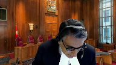
In that particular context, the public interest has a much greater weight in view of the case, in the, under the cases, and that essentially that being caught up in the zoning process isn’t a de facto expropriation.
That I wouldn’t state that as a principle of law but that is the context because otherwise it would be tremendously burdensome for municipalities across the country.
So that’s my question there.
How do you deal with that?
And the second question is, given that I have you, is what about leasing the land?
Is your client prohibited from leasing the land?
It may not be able to develop it, but is it prohibited from leasing it?
Because that was a significant fact in CPR, as you know.
Speaker 1 (00:31:12): Uh okay let me come at the last point first because of course in CPR the primary finding was that the bylaw which was under attack didn’t prevent CPR from using the land for the purpose it could always use it which was to run a railway but coming back to Mariner and Hartel I’m glad you asked me about those because I was going to speak to Mariner in any event.
Mariner has to be read carefully because it’s a case that focused specifically on the question of whether or not the conduct impugn fell within the four corners of the Nova Scotia Expropriation Act.
It wasn’t argued on the basis of a common law cause of action it’s described in the language as de facto expropriation but the claim that was made was that the conduct took it into the Expropriation Act and the standard of the Expropriation Act was what was being applied by the court.
Hartel is an application to seek mandamus to require expropriation it was not a de facto expropriation case and so they fall in my respectful submission to be considered very carefully and certainly neither of those read properly derogates from what we say CPR should mean.
So perhaps I can just stop for a minute and say what is it that Annapolis complains of?
Annapolis on the very extensive evidence which this court appreciates owned this land since 1956 almost a thousand acres of vacant land was incorporated into Halifax Regional Municipality the evidence uncontradicted was it was always slated for service development when it came into HRM was the very point of the annexation.
Despite this in 2006 the court decided to designate this land in the Regional Municipal Planning Strategy as parkland my client complained and what did HRM do?
It designated the land for service development and I wonder if I can just stop for a moment and ask you to look at tab six which is the Halifax Regional Municipal Charter.
And I wonder if I can just stop for a moment and ask you to look at tab six which is the Halifax Regional Municipal Charter.
And that is the applicable statute and at page 19 of tab six of the condensed book the statutory expropriation provision is contained and then carrying over at page 20 at section 227 the council must adopt a municipal planning strategy and it sets out what they are and I’m not going to linger there other than to take it to the bottom of page 21 to section 232 which says a municipality may not act in a manner that is inconsistent with the municipal planning strategy and I’ll come back to that in the course of my argument and then over the page at page 23 section 237 the council may zone privately owned land for future public use other than for transportation services if they all the bylaw provides for an alternative zone on the land consistent with the municipal planning strategy and secondly where privately owned land is zoned for future public use the municipality shall within one year of the effective date of the zoning acquire the land or the alternative zone comes into effect.
Justice Kasirer (00:34:50): Mr. Griffin, your colleague says, first of all, they say there’s no park.
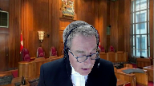
In fact, there’s an express statement in the non-binding planning strategy that the land must be acquired to create a park.
But more pointedly here, that under the Municipal Government Act, these are municipal planning strategies, mere statements of policy.
And that, at best, they are a guide for future development and they don’t, as strategies they do not, and policies they don’t, not only do they not convey development rights, but they don’t formally impose limits.
What’s your answer to that?
Is that correct?
Speaker 1 (00:35:42): I don’t disagree with the fact that the municipal planning strategy is a statement of intention with respect to what is to happen, but the municipality must act consistently with it.
Secondly, that doesn’t answer the question of fact as to whether the municipality is actually using the land as a park.
I say that they have to answer for that, firstly, but secondly, that they have to comply with the process that’s contemplated for the reasons that the municipal planning strategy is in place.
And I say if the intention of the municipality is not to do what the municipal planning strategy says, which is to treat this land for service development, but rather to use it as a park, then it has to answer under the proper application of the standard and CPR.
Justice Moldaver (00:36:36): This, if I understand you correctly, this kind of goes back to this, paragraph six of your factum.
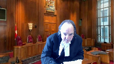
I mean, you put that in for a purpose, and I’m just trying to understand in the context of motive, intent, bad faith, etc.
But it sounds to me like your thesis really is, is that there’s no question they intend for this property to be zoned a park at some point, that if they do it now, it’ll cost them money under whatever section 207.
They want to avoid that, so they put in this zoning that is there now, but it’s all just a sham because really the real plan here is to have this land be used as a park.
And indeed, you go on from that
and you say, by the way, that’s exactly what they’ve been promoting for the last how many ever years.
And in a way, how dare they be putting up signs saying, you know, here’s a park come and, you know, you can call the municipality or whatever it is and get directions and all these things.
And you’re putting this together as a package and saying, if I understand it, surely we can’t deal with this on a summary motion.
Speaker 1 (00:38:08): Especially not a partial summary judgment motion.
I say those are all material facts that’s that’s the story I want to tell when I get to this trial
Justice Moldaver
and I say that properly looked at the test should allow me to do that and that’s not for today that’s for then
and that’s what trials are all about.
Justice Côté (00:38:28): Sir Griffin, I heard what Justice Moldavar said.

I just have a question for you because Halifax said in the Court of Appeal, oh if you’re right you still have your other causes of action.
You will have the opportunity to discuss all of this regarding the misfeasance in public office, the unjust enrichment, and they say you have other remedies.
So can you respond to their argument?
Speaker 1 (00:38:55): Yeah, I’m happy to do that, Justice Cote.
First off, it is a feature of the common law that one can elect one’s remedy and elect one’s cause of action, and there’s no answer to say, well, you’ve got other causes of action if the principle is that this cause of action doesn’t exist by virtue of the tests of the Court of Appeal applied.
So my friends are really piggybacking on the elimination, if you like, of the common law cause of action and saying, well, in the same way the Attorney General may try to do it with respect to their intervention, to say, well, you’ve got unjust enrichment, you can deal with it over here.
The answer to Justice Roe’s observation is this.
This cause of action has been around for a long time, back to Kieser’s Hotel, Ulster Transport, when the UK government blew up Burma Oil’s refinery at the start of the Second War.
It has a place and it has a purpose, and it’s no answer to say, well, you’ve got other causes of action.
That doesn’t satisfy any principled approach.
Justice Martin (00:39:57): Thank you.
Mr. Griffin, part of what you’ve asked us to do is you say that the current interpretation of beneficial interest, basically, I think your words is it’s bad policy.
And I’d like to explore that with you because your friends opposite say that CP is intentionally narrow.
Because, and does track do your a and de facto expropriation, because it shouldn’t matter on the method, but it that it is not, it’s limited on purpose, because there’s zoning regulations because there’s so many regulations, and you’re asking us to expand for policy reasons, this test.
So, how do we deal with not knowing how far to go.
And the fact that all of this exists in a highly regulated context of of zoning bylaws, and how are we to to gauge what the impact of what you’re suggesting may mean.
So those are just kind of two, two parts of that question.
Speaker 1 (00:41:09): All right, perhaps I can approach it best this way, Justice Martin.
These are highly fact-specific cases.
The principle should go so far as to express the benefit as opposed to the beneficial interest as the component in order that it’s clear that it is not simply the transfer of legal or beneficial title to a property interest.
And that can be accommodated exactly within the language, the spirit of the language that I say Chief Justice McLaughlin wrote in that case when she’s talked about it being flowing from or related to the property.
But I accept what you say which is that you have to know how far it goes but the court has been able to gauge that and in the regulated environment if we were just here talking about zoning and I’m complaining about the lack of an up zoning I understand that
and I understand those cases that say well that’s tough for you plaintiff because that’s that is for the benefit of the public at large one of which is you versus the type of case we’re talking about here consistent with the principle of this court in the Antrim case that an individual landowner shouldn’t disproportionately bear the burden of a public benefit.
Court was able to deal with that in Tenor.
The court was able to deal with that in Manitoba Fisheries on the facts at not expressing the limitation to a property interest as such because you can’t reconcile those cases with a property interest.
So I say expressing the principle in a limited way forward does the job gives the ability of the court to do what they’ve been doing before and after CPR which is to look at the various types of claims that are made and and to determine what is the substantial interference with the enjoyment of the property of the property owner and what is the benefit that flows to the public for which compensation should flow.
So I’m sorry Justice Kerry.
No you please finish.
Well I was pretty much
there I just didn’t have the w on flow there.
Justice Karakatsanis (00:43:31): Okay.
Well, I want to bring you back to the benefit and what precisely you mean by the benefit.
You’ve talked about the benefit that flows to the public.
In your factum, you talked about an advantage.
And I want to be sure that I understand what exactly are you proposing in terms of clarification of what a beneficial interest means.
As you know, the various interveners have suggested that it’s got to be a benefit, perhaps to the authority itself, a benefit that has a monetary value.
I’d like to get some precision on what it is you mean, either in your factum when you talk about some advantage to the public, or as I’ve heard you, I think today, be a little bit more specific about it being a tangible benefit.
So if I can have your answer to what do you say the test really is then in terms of clarification.
Speaker 1 (00:44:34): I don’t advocate, Justice Karakatsanis, that you go too far down the road of trying to describe exactly what the benefit is in any particular circumstance, because in trying to define it farther than benefit, it becomes difficult to deal with.
I say, and I was part way through dealing with the facts in this particular case, I say, and I’ll come to the end of the factual submission in a moment, but I say, here, what are the benefits?
The benefits are HRM meets its commitment to the public for a regional park and enhances the regional park, much like in Tanner, Justice Estes said, that the lack of access enhanced the park, didn’t transfer value, didn’t sound in money, but it was a benefit.
HRM meets its commitment to the province for the regional park, and we see in the evidence, uncontradicted, the very pointed letter from the Minister of Environment about the failure to meet that commitment.
It protects and enhances its ability to deliver the regional park.
It preserves the lands in an undeveloped state to permit that to happen.
It avoids having to pay, which is the very thing that HRM said in 2006, we didn’t zone it because we would have to pay for it, and it allows it to invite the public onto the land.
And the only person who can do that, Justice Karakatsanis, is the owner.
Those are all benefits.
I can’t say that it sounds in an economic benefit measured like damages, but it certainly sounds in a benefit of not having to pay for the land at the same time, meeting those commitments and inviting the public onto the land.
Justice Karakatsanis (00:46:32): I understand what your submissions are in the context of this case, the factual context, but you’re still asking us to take the words beneficial interest in CPR and to say that those, it’s a beneficial interest is an interest flowing from the land, a benefit flowing from the land unrelated to title to the property.
So I’m just trying to understand what you mean by the word beneficial interest, because we can’t just say, well, it doesn’t mean, I mean, it just means any benefit.
That would be far too broad.
So I am not following you quite, Mr. Griffin, when you say, well, you don’t have to describe what benefit means.
We do actually, if you’re asking us to interpret the words beneficial interest, are you suggesting that we don’t have to say what they
Speaker 1 (00:47:38): Well, the Chief Justice, in a direct sense, didn’t actually define what beneficial interest meant in that case, and we’ve been working with it since.
Secondly, with respect to benefit in my respectful submission, it would be a material benefit flowing from the lands.
In other words, it can’t be, or when I say that, or the property interest, because it would have to be material.
The court would have to assume that it’s material.
It can’t be immaterial, but it has to flow and be connected to the property, and the property right, which is…
Overlapping speakers (00:48:18): Does it have to have some value though?
I mean, you’re asking for compensation.
Speaker 1 (00:48:22): But Justice Karakatsanis, my compensation is based on what I have lost, not trying to value their benefit.
This isn’t a vote on just enrichment, which is valued in a different way.
Overlapping speakers (00:48:36): Do they have to have any value? I guess.
Speaker 1 (00:48:39): But look, so I’ve interrupted you Justice Caracazanas, but perhaps I can just finish the thought.
If you look at Tenor, for example, there was no monetary value that you could put to the enhancement of Wells Grey Park by virtue of the lack of access and not granting a permit.
In other words, the Crown didn’t have the mineral rights, the Crown couldn’t exploit the mineral rights, the Crown didn’t own the mineral rights, the Crown took no interest in the mineral rights.
All it did was prevent them being exploited.
That was enough in Tenor to amount to de facto expropriation.
So trying to link it to the notion of a dollar value or the equivalent passing to the authority in my respectful submission is too narrow.
Justice Côté (00:49:29): Is it not a whole in expropriation law, Mr. Griffin, that the value to be considered is the value to the owner, the person who is suffering the expropriation, whatever value it represents for the deity taking the property.
Speaker 1 (00:49:46): And that becomes the fight in an expropriation case.
Speaker 1 (00:49:50): I leave the evidence of I was going to put up a condominium building and have this return on it and the municipality says to me you know it was never going to be that valuable we’ll have that fight about it but if the municipality is is expropriating the land for a bus station it can hardly be measured on the on the question of the value to the municipality that’s the wrong test so I agree with you and that’s why this isn’t an unjust enrichment cause of action it’s focused on the plaintiff it’s not focused on the defendant I’m wondering Mr. Mr.
Justice Brown (00:50:22): Mr. Griffin, if your answer to Justice Kara Katsanis might helpfully draw from the reasons of Justice Wilson in Tenor, because she appears in certain places in her decision to understand the Crown’s action as…
Justice Katsanis is the only person in the world who can answer to Justice Wilson’s question.
Overlapping speakers (00:50:40): Eh-eh-eh-eh-eh-eh-eh-eh-eh-eh-eh-eh-eh-eh-eh-eh-eh-eh-eh-eh-eh-eh-eh-eh-eh-eh-eh-eh-eh-eh-eh-eh-eh-eh-eh-eh-eh-eh-eh-eh-eh-eh-eh-eh-eh-eh-eh-eh-eh-eh-eh-eh-eh-eh-eh-eh-eh-eh-eh-eh-eh-eh-eh-eh-eh-eh-eh-eh-eh-eh-eh-eh-eh-eh-eh-eh-eh-eh-eh-eh-eh-eh-eh-eh-eh-eh-eh-eh-eh-eh-eh-eh-eh-eh-eh-eh-eh-eh-eh-eh-eh-eh-eh-eh-eh-eh-eh-eh-eh-eh-eh-eh
Justice Brown (00:50:40): is having amounted to precisely what you’re talking about.
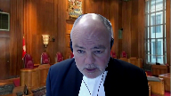
She says that by depriving the holder of his right to go on the land for the purpose of severing minerals, the crown has effectively.
And so it’s the effect that is the question.
They’ve effectively make the holders lost the crown’s game.
And so I’m wondering if effective suggests that much as the CCF is submitting, for example, that the inquiry is not so much on what the public authority acquired, but what was lost by way of the rights of use and enjoyment of the land.
Speaker 1 (00:51:22): Yes, I accept that characterization of Justice Wilson’s decision because she was looking at the fact that you couldn’t gain access to your mineral rights or you couldn’t gain access to your exploration permits.
You couldn’t drill because you couldn’t actually go on.
Nothing got transferred.
In both Tenor and Manitoba Fisheries, the Crown argued that there had to be a taking.
In other words, that it wasn’t sufficient to make out the cause of action unless in Tenor, the mineral rights went to the Crown and in Manitoba Fisheries, the goodwill in that sense was transferred to the Crown.
And in both cases, the Court said that’s not the requirement for the taking in our particular circumstance.
Justice Wilson looked at Tenor and the concept of a profit of Pounder as well, which was slightly different than Justice Esty, but the principles are the same.
Overlapping speakers (00:52:20): Sorry, go ahead, Justice Mulder.
Justice Moldaver (00:52:22): Well, I just wondered if you could help me out because in Tenor, though, the property owner had a right given to them.
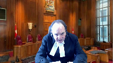
This was a right that they had that is taken away effectively.
What right is it that you’re saying your client has that has been taken away?
I’m just trying to get this clear in my mind, or maybe you’re not saying that
and you’re saying something else.
Speaker 1 (00:52:47): No, what I’m saying is that, and where I was coming to with the regional municipal planning strategy and I’m not going to take you through chapter and verse of what’s in tab four, but the regional municipal planning strategy says that these lands are a combination of urban settlement and urban reserve, and it contemplates, and I was going to page 15 at tab four of the, of the brief.
That the primary intention is that that land is going to be developed over the course of the following 25 years.
And the decisions as to whether or not to permit it to move forward to secondary planning is based on the various principles S1, S2, S3, that we see in the, in the document and then for the urban reserve designation the balance of the lands.
The, the further principles.
Now we say they simply weren’t applied by the municipality it’s obliged to conform to the regional municipal planning strategy.
I’ve taken it to the fact that they said well we didn’t designate a parkland because we’d have to pay for it.
And carrying forward, what happens.
My client applies for secondary planning in 2009 and 2010.
And in 2010, the regional municipality passes a bylaw sorry passes a resolution, saying well here’s what we’re going to do we’re going to have a facilitation in order to determine what the boundaries of the park should be so we can determine whether or not it’s developable.
And it takes from 2010 to 2014 to get started on that facilitation.
And, including the fact that HRM threatens to pull out.
And there’s a report that’s made what Justice Robertson who was a facilitator and this was a public process was asked to do was to define what the boundaries would be and make a recommendation to regional municipalities as to how to proceed.
And so, she went through that process of trying to sort out what the right boundary was, and my client prepared a development plan and said here’s how we see this panning out.
And here’s how we can integrate that with your park use will give up some, and we’ll give you that in return for moving forward with the secondary planning.
And then in 2009, the facilitators report is there, and it’s a public document.
And if I’m at page 30 of the brief.
Justice Robertson recommends to HRM, and I’m at the highlighted bullet.
If you haven’t acceptance by HRM of the development plan and that’s my clients compromise plan as a basis for resolution of the regional park boundaries through a facilitated agreement I’m sorry will secure park land for generations to come, and amicably amicably settle the regional park boundaries and action that cannot delay indefinitely, while not permitting development of the lands which is what we say has been going on.
And the conclusion at page 31.
Second item set settling the regional park boundaries as proposed by the landowners and the development plan achieves regional park objectives, and is economically feasible.
And it’s predicated in the next paragraph on the owners proceeding to secondary planning.
Now no sooner is that delivered than the Minister of Environment surfaces in the letter which you see it tab 10, and what the minister is saying in the paragraphs that I’ve highlighted is that it’s adjacent wilderness area was created by the province, in part in reliance upon the assurance from HRM that there was going to be a regional park beside it.
And if you look at the third paragraph.
The recent facilitators report for that presents a different concept for the regional park than identified in the regional plan, or represented to the province in the past.
A key changes to the cluster of interconnected lakes originally seen and we’ll come to those because those are the very lakes that HRM invites the public on to.
The balance of the letters to the same effect which is, you’re not sticking to what we had agreed.
So what does HRM do a tab 11.
This is the resolution of September 16, 2016, certified in 2019.
And if you look at the middle, HRM refuses the request to initiate secondary planning for all highway 102 west corridor lands up those are our lands.
But what’s the precursor to it.
The first one that it received the facilitators report and take no further action concerning the facilitation process or the reports recommendations.
The next motion is to get going on the park.
And we say that in conjunction with what you see at the next tab and we can just stop at one of them is the HRM is treating this as a park, inviting the public on to the park, calling at the park and sending them on to our land as a park.
And you see that in the circle portion of page 35 at the beginning of tab 12.
The height will take place at Fox Lake and Blue Mountain birch cove lakes regional park.
Well there isn’t a park and
Fox Lake is right slap bang in the middle of my client’s land.
If that’s right, if they’re treating this land as a park justice moldaver, then that is a benefit.
Justice Jamal (00:59:05): What you’ve lost, though, it would seem to me, is your client’s interest in developing the land, which isn’t a right, it’s an interest in developing, having the land developed further.
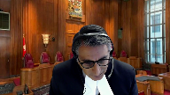
So, I guess, in terms of inviting people on and treating it as a park.
I guess those sorts of claims were dealt with in CPR as being matters of trespass.
It doesn’t actually go to expropriation necessarily.
But my, my, my one question I do have is in respect of the so called material facts and dispute because, as I understand it now it’s a clarification of beneficial interest, that’s the legal question.
And then the other issue is the application of the summary judgment standard.
So in respect to the so called material facts and dispute in paragraph 25 of the, of the motion decision, and then paragraph 87 of the legal decision, what are the material facts and dispute because that’s really, at the end of the day, what we have to do is say are the material facts and dispute.
Speaker 1 (01:00:16): There’s a lot packed in there, Justice Jamal, with one minute and one second left, so let me deal with it this way if I can.
First off, what the cases talk about is a deprivation.
I say it’s admitted that the only reasonable use for this property is service development.
If it is being used as a park, we have lost all reasonable uses.
CPR, one must remember, was not a case in which the municipality invited the public onto the Arbutus Corridor.
There’s no suggestion in that case that that was happening, or that anything that I’ve given in tab 13 was happening in these circumstances.
But to come back to the question of material facts, I say that the evidence informs the material facts, which are, has HRM avoided engaging in the proper statutory zoning to avoid its obligation to compensate Annapolis for using these lands as a park and taking these lands as a park?
Has it obstructed Annapolis attempts to develop the land for that purpose, which is not consistent with the policy principles contained in the regional municipal planning strategy?
Does HRM want these lands as a park?
Is HRM using and promoting the lands as a regional park?
Has HRM prevented Annapolis from making any reasonable use of its lands?
Intention goes to the heart of that.
Those are material facts for determination at this trial, on the evidence that will inevitably be led at this trial.
All we ask for, Justice Jamal, is the opportunity to have our trial on a proper basis.
The Court of Appeal took it away from us.
I say it was dead wrong in doing so, and that the proper approach is to allow the appeal redefine, if necessary, the scope of the benefit.
And I say it would be very helpful to all concerned to clarify that principle and let us get on to the trial.
We’re mighty anxious to do it.
Justice Wagner (01:02:37): Thank you.
Thank you, Mr. Griffin.
Mr. Mr. Malcolm Lavoie.
Speaker 2 (01:02:43): Good morning Chief Justices.
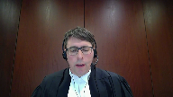
The Canadian Constitution Foundation intervenes in this appeal in order to propose a revised test for de facto expropriation.
A revised test resolves ambiguities in the existing framework and aligns the test with underlying principles.
To get to the point that’s been occupying much of the court’s attention this morning, we submit that if the beneficial interest requirement is to be retained, it should be understood broadly to mean any entitlement to a benefit that flows to the government or to the public at large.
In our submission, that’s an appropriate development of the law, because it resolves the ambiguity present in the CPR test.
Overlapping speakers (01:03:31): Oh, so Mr. Lavoie, you don’t need to change the test.
Speaker 2 (01:03:34): In our view, our first position is that it would be preferable to overturn CPR and eliminate the beneficial interest requirement.
Our view is that that would provide greater clarity.
Is that really necessary?
Justice Brown (01:03:50): I mean, if we understand a beneficial interest as being the right to use and enjoy land, which is really the lost effect that you speak of, it seems to me, as understood in tenor, it seems to me that CPR in Vancouver is still perfectly serviceable with that necessary clarification.
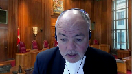
Justice Wagner (01:04:17): And just to follow up with what Justice Brown is saying, and if we understand that notion of…
Overlapping speakers (01:04:25): That’s it.
Justice Wagner (01:04:25): that interest cannot mean transfer of property, which would become the URI aspect of the fire where we’re concerned with de facto expropriation, you don’t need to change the test.
Speaker 2 (01:04:40): We think that the test can be adequately developed while keeping the beneficial interest requirement as long as beneficial interest is interpreted broadly.
Our submission is that it is broader than a right to use land, a right to use land flowing to the government.
Any entitlement to a benefit that accrues to the government or to the general public ought to be sufficient.
That keeps the focus appropriately on the effect of the measure on the rights of the owner, which is in keeping with the origin of this doctrine as part of the common law’s broader commitment to the idea that government interference with property rights must be validly authorized by statute or in limited cases the royal prerogative.
And this doctrine developed as a further sort of corollary of that idea that when there’s something that amounts to an expropriation, it presumptively comes with compensation.
It’s about protecting the rights of the owner.
And so, a narrow and
Overlapping speakers (01:05:43): Can I ask you…
Justice Karakatsanis (01:05:44): Why a benefit to the public?
Why not a benefit to the authority?
Isn’t zoning and, I mean, isn’t that all about what is in the public interest?
So why would you go broader than a benefit to the authority?
Speaker 2 (01:05:44): Why a benefit to the public?
Why not a benefit to the authority?
Isn’t zoning and, I mean, isn’t that all about what is in the public interest?
So why would you go broader than the benefit to the authority?
Well, the vast majority of zoning measures would be unaffected by this, right?
We’re talking about, if we’re talking about a complete deprivation of the rights of the owner, something amounting to a deprivation of all reasonable uses, the vast majority of zoning laws are untouched.
In terms of why a benefit to the public should be sufficient, I think we can take notice of the idea that the government and government authorities stand in a particular relationship to the public, that when a benefit is secured for the public, that the government doesn’t have to pay for, that amounts to a benefit to the government, an avoided cost, a benefit that the government’s able to secure for the public without having to pay for it.
And in terms of coherence, a broader understanding that lends greater coherence to the law.
From the point of view of an owner, the precise nature of the benefit that flows to the government or to the general public is not morally relevant.
If an owner’s rights, if an owner’s been fundamentally deprived of her rights, the nature of that interference is the same, regardless of how you characterize the particular nature of the benefit.
And so a broader interpretation lends greater coherence to this doctrine, which is ultimately in our submission about protecting the rights of the subject presumptively.
And that’s important to emphasize as well.
The rights that we’re talking about here are common law rights.
The legislature can step in and alter any entitlement or any presumption of a benefit.
And so there’s no threat here to the regulatory authority of public bodies.
Justice Wagner (01:07:53): Thank you very much.
The court will take its morning break.
15 minutes, thank you.
The court, La Cour.
Thank you, Michelle Awad.
Speaker 3 (01:08:11): Good morning, Chief Justice, justices.
Let me begin with the point that arose from Justice Moldaver’s question.
There has been no taking from the appellant in this case.
HRM, the respondents, counsels, the elected counsel’s decision in 2016 changed nothing.
That means the issue which the appellant raises, frankly, is not live for this court.
Now, the respondent also says that there was no regulatory act, that the decision to refuse the request to initiate secondary planning was not a regulatory act.
It was a status quo.
And there is nothing to use to assess whether there was a taking or an acquisition.
The appellant says they are not complaining about not getting up zoning, but in fact, that is exactly what they are complaining about.
We also say that the common law test for de facto expropriation, if it is to be examined, it is both settled and appropriate.
There’s no reason to change it.
Now, I too will spend a little time on the facts.
The first is this, the appellant’s lands have never been zoned for service development.
The 2006 Municipal Planning Strategy, it is a detailed strategy prepared by HRM, passed by its elected counsel, as required by the Municipal Government Act, the provincial legislation.
And it is required that all lands in the municipality be subject to this strategy.
The HRM Charter that came into effect after 2006, it has the same requirement.
It exists to this day.
As I think it’s Justice Casir noted, the Municipal Planning Strategy is a policy document.
It is a policy document made in accordance with the municipality’s policy function required by the province.
The policy document ensures that the municipality and the province carry out their public interest function in the regulation of land development.
And that’s an important public interest function.
Justice Côté (01:10:38): Mr. Watt, I’m sorry to interrupt you here, since you are talking about the municipality in the province.
From the evidence, the undisputed evidence, the municipality in the province seems to agree, and we have the letter referred to us by Mr. Griffin, the letter of June 2016, after the facilitation report, and seems to agree that this land will be used as a park.
So you said at the beginning that Annapolis is complaining about the fact that it cannot develop the land, but I think they are complaining more than that.
They say, if you want to use my land as a park, please pay me.
Speaker 3 (01:11:18): Understood Justice Cote.
I understand the appellant’s position.
In our submission, the letter from the Department of Environment needs to be read in the context of the park’s aspirational or the aspirational language about the park that’s in the municipal planning strategy.
The fact that both the language in the strategy proper and the language on the map with the conceptual park boundary speaks to the need to have the financial capacity to purchase and that without that it is just a policy document with an aspiration.
So in our submission, the letter from the Minister doesn’t increase the burden on the municipality.
It simply reflects that the Minister was hopeful, the province was hopeful that the municipality would be able to carry out the plan envisioned in the municipal planning strategy.
Justice Rowe (01:12:09): I must say, I just find that hopelessly evasive.
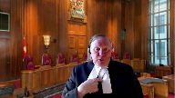
I’d also associate myself with Justice Cote’s comment.
It seems to me there’s a fundamental difference between saying, as a matter of public policy, we’re going to limit when or to what extent you develop land, that goes along with zoning and the like, versus we are going to use your land for a purpose of our choice, in this case, a park, and to say, well, I haven’t gotten around to the park yet, and maybe it’s just planned and everything else, I mean, isn’t this why we have a trial?
Isn’t this why this has to be tested?
Because it sounds to me like the decision is made, the fix is in, this is effectively been taken by the municipality for the purposes of a park, but you just don’t want to own up to it, because you don’t want to pay.
Speaker 3 (01:13:03): Thank you Justice Roe.
Well first, the land has not been zoned as a park.
It remains zoned mostly urban reserve and some urban settlement.
And you’ll see in the record that since those original designations were made in 2006, there’s been progress through the six areas that were listed as urban settlement areas.
So in 2006 there was a list of six.
The appellants lands were the sixth urban settlement designated area and in the 2014 municipal planning strategy where they speak to urban settlement, they refer to the fact that three of the six have been developed and are in the process of completion or are being completed and that three others are still waiting.
In Mr. Hattie’s affidavit 2019, so another three years later, you see that only two are waiting.
Justice Karakatsanis (01:14:01): But Ms. Awad, isn’t, I mean, are these material facts you’re talking about?
I guess, I think the question really is this, if there were to be a finding, if there were to be a factual finding that HRM was using, promoting and using the land as a regional park, and in order not to expropriate and pay for it, would that amount to a de jure, sorry, I guess, de facto expropriation or whatever words you want to, would that amount to a taking?
We say no, Justice Karakatsanis.
Even if all of those facts are proven.
Speaker 3 (01:14:45): Well, Justice Karakatsanis, the facts that you have, that the Court has in front of it, are signs on land other than the appellant’s land.
Justice Karakatsanis (01:14:54): My question is different.
If in fact there were a trial and there was a factual finding that HRM was using it as a park in this way in order to avoid a taking and a payment of it, would that amount to, would that satisfy the test in CPR?
That’s my question to you because that’s the purpose of having a trial.
That’s not, the question is are there facts, material facts in dispute?
If that were the factual finding, would that meet the legal test?
Speaker 3 (01:15:30): If the factual finding was that a taking had occurred, then yes, it would.
But you need both that taking and the acquisition by the municipality.
So I finished my answer too quickly.
It’s a two-part test, as the court is well aware.
So you need to find a taking, and that taking needs to meet the definition from CPR, so the deprivation of all reasonable uses, and the acquisition of that same beneficial interest by the regulating body as a result of its regulatory act.
So, I’m sorry, I’m sorry, I’m sorry, I’m sorry, I’m sorry, I’m sorry, I’m sorry, I’m sorry,
Justice Wagner (01:16:08): Mr. Ward, why do you need acquisition if you want to talk about the fact to expropriation?
Overlapping speakers (01:16:19): you need
Justice Wagner (01:16:20): We’re not talking about the URI because it’s not an acquisition, it’s not a purchase.
Speaker 3 (01:16:26): uh well justice Wagner the chief justice Wagner the reason you need acquisition is that that defines the common law concept and mirrors it to it’s de jure cousin or older brother however you want to put it if you take away acquisition and you you invoke a task or put in place a test similar to what Mr. LaVois was advocating for you’re essentially creating a new cause of action that is infringement on property rights
Overlapping speakers (01:16:55): What did the crown acquire in tenor?
Speaker 3 (01:16:56): The Crown acquired in tenor, well, it depends who you ask, Justice Wilson said that the Prophet of Prandre was extinguished when the park pass was denied, and so the Crown got his whole rights on the land returned.
Justice Brown (01:17:19): not quite what she said, right?
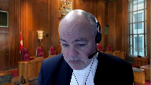
She said that it was that the Crown had effectively gained from the holder’s loss.
A profit, a pronder is a registrable interest in a torrent system.
It can’t be taken merely by denying access.
You have to take the registered interest itself.
But it did interfere with the right to use it.
So again, what was it that the Crown acquired?
Speaker 3 (01:17:51): Well, as I read the the case, Justice Brown, the Crown reacquired the mineral grants that had originally been granted to the owner back in the 30s.
And Justice Estes said something very similar.
Overlapping speakers (01:18:04): Where do you say, okay, well, take me to where Justice Esty says that.
Speaker 3 (01:18:09): Justice Esty, it’s at page 563 of the decision.
It’s in tab 14 of our condensed book.
Next to the letter G, the denial of access to these lands occurred under the Park Act and amounts to a recovery by the Crown of a part of the right granted to the respondents in 1937.
Justice Brown (01:18:35): But the word amounts to seems to be doing a lot of work there, right?
It, it, the point is it is effective.
It’s not an actual acquisition.
It, it, it is amounting to a recovery by the crown.
Speaker 3 (01:18:53): And in our submission that is exactly consistent with the concept of de facto expropriation.
Justice Brown (01:18:59): How do you actually recover?
How do you recover an unregisterable charge?
It wasn’t a taking of title.
It wasn’t an interference with his right to hold.
It was a barring of access so that he couldn’t use his right to…
Overlapping speakers (01:19:13): And that is taking his interest or depriving him of his interest.
Justice Brown (01:19:18): Yes, but what they did was they borrowed access.
They didn’t go and then extract minerals.
Overlapping speakers (01:19:26): Well, we don’t know that.
Justice Brown (01:19:27): that.
Well, they turned it into a park. So, um.
Speaker 3 (01:19:33): So in our submission, Justice Brown, you’re saying exactly what the criteria for de facto expropriation are, in that that mineral rights holder would still have some piece of paper that demonstrated he had those mineral rights, but in effect, de facto, they had been recovered by the Crown.
Justice Côté (01:19:54): I would like to bring you, Ms. Saouad, to the rules of the summary judgment motions.
The first judge here, the motion judge, says that there can be no question that there are vast issues of material fact to be determined.
And then in paragraph 25 of your factum, you say that the appellant is misleading when they say that the municipalité promoted the lands as a public park.
And you say that there is no evidence of that.
From what we know from the file, the only evidence on the summary judgment motion was filed by the appellant and was undisputed by Halifax.
So are you saying that the motion judge was wrong to say that there are vast issues of material fact to be determined at the trial?
Speaker 3 (01:20:47): Yes, and it’s based on the issue of material fact, not issues of fact.
The question of whether-
Justice Côté (01:20:55): material material is not the fact that there is an allegation that Halifax is using the lens as a park is not material here
Speaker 3 (01:21:04): the the evidence that Justice Cote you just referred to was the allegation that Halifax was promoting the use of the park and we say that that is not a material fact to whether there has been a taking a removal of all reasonable uses by from the landowner and an acquisition of that same beneficial interest by the municipality.
So the the it’s correct that the chambers judge found that there were material facts in issue.
We argued and and the court of appeal agreed with us that the facts so-called the seven that were listed by the chambers judge were not in fact material to the two-part test and cpr.
Justice Kasirer (01:21:45): Could you say just, I’m trying to give expression to your thought, even if HRM was inviting people onto the Annapolis lands to use it as a park, that invitation and that use would be unlawful?
Overlapping speakers (01:22:02): Crap.
Justice Kasirer (01:22:02): invitation to trespass and it’s not plain to me how illegal acts by HRM could constitute a taking.
Speaker 3 (01:22:11): Thank you, Justice Casir.
That is articulating what I was trying to say much better.
But yes, that is the Respondent’s position.
Justice Rowe (01:22:18): But isn’t, isn’t, I mean, this, we’re talking about de facto, what’s in reality.
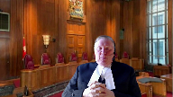
I mean, isn’t it point blank, simple, that if you invite people on to somebody else’s land and say, treat it as a park, you have in effect taken it.
I mean, how, how can it be otherwise?
Speaker 3 (01:22:40): well, the owner of that land can prevent the people from going on it, quite simply.
And Justice Roe, with respect, that doesn’t amount to taking the land.
That amounts to, at its worst, encouraging people to trespass.
And in our submission, that’s not enough.
Justice Karakatsanis (01:22:57): Can you explain to me why a taking is not a taking if it’s done illegally?
I mean, I think you said an illegal act could not constitute a taking.
I’m asking you why.
Speaker 3 (01:23:14): No, I was, well, if I said that, I may not have been clear.
So Justice Caracatanas, what I’m saying is, trespassers on the private lands of the appellant do not amount to the municipality taking that land from the appellant.
Justice Jamal (01:23:32): I think what you could say, I guess, what you’re saying as I understand it, Mr. Watt, is that it may be illegal action, it may be that the exercise of zoning powers for an improper purpose or attempting to obstruct attempts to develop the land are actionable through other some other torts
but it doesn’t amount to in and of itself, the exercise of zoning powers doesn’t in and of itself amount in law to a taking.
That’s really the point.
So to go back to Mr. Griffin’s material facts and dispute which Justice Kara Katsanis was asking you about, I think as I understand it your point is even if all those facts are established, you assume them to be true, it doesn’t amount to a taking in law.
Overlapping speakers (01:24:18): It may be.
Justice Jamal (01:24:18): it may be a basis for actionable misconduct by the municipality but it doesn’t amount to a taking-in law
Speaker 3 (01:24:26): That’s correct Justice Jamal, thank you.
Importantly, the Municipal Government Act did not require, and does not require, the municipality to carry through with any of the plans, the policies, set out in the municipal planning strategy.
Now, as I noted, most of the appellants lands were designated urban reserve, some designated urban settlement, and the appellants lands were one of six designated urban settlement.
I touched on this a little bit earlier.
Now, the appellant makes much of the language in the municipal planning strategy from 2006 dealing with the park, but we say it was purely aspirational, purely policy, and the same applies to the conceptual boundaries that were set out in map 13 to the strategy.
The fact is there is no park, and as we’ve been discussing, there may be trespassing on the appellants lands, but that does not either amount to a park or amount to a taking from the appellant by the by the respondent.
Now, recall there was also a follow-up municipal planning strategy in 2014.
There was no change.
There was no change to the language about the park.
There was no change to the designation of the appellants lands.
There was, as I mentioned, reference to the fact that of the six identified urban settlement areas, three of them had been built out or were in the process of being developed, and the other three were still in line.
And Mr. Hattie’s affidavit, it’s paragraph 141, 142 in the affidavit that’s in the record, he indicates that only two as of 2019, two of those urban settlement areas were still awaiting move toward development.
The regional municipal planning strategy refers to secondary planning.
That is the path to service development.
Now, the appellant requested that HRM, the respondents council, initiate that secondary planning process, and that process might, at the end, change its rights.
In 2016, municipal council refused that request, refused the request to start a process that might have changed the rights.
And to date, the process hasn’t started.
The zoning remains as it has been since 2006.
The permitted uses of the appellant’s lands remain as they have been since at least 2006, earlier if you review the evidence, and the end result is the status quo.
There has been no change, there has been no taking, there’s really been no regulatory act, because the decision to say no, no to change anything, is not in fact a regulatory act.
Now, none of those facts are challenged, and the respondent says that is all this court needs to dismiss this appeal.
Justice Karakatsanis (01:27:37): I think just to be fair to Mr. Griffin’s position, he’s not saying this is just a zoning.
This is about zoning.
This isn’t a complaint about zoning.
He’s saying it’s a complaint about zoning in the context of the using of the land as a park and that it’s only in, you have to look at those two things together.
I think everybody agrees that the exercise of zoning powers or the refusal to exercise zoning powers is not by itself a taking.
I mean that’s exercise in the public interest
but I think the position is that it’s the combination of the using of the land as a park, as a regional park in order to avoid having to zone and pay for that.
That is the nature of the allegation made.
Whether it’s true or not is a different issue but assuming that that can be proven, that’s the position of Annapolis group.
Speaker 3 (01:28:42): Well, our submission, Justice Karakatsanis, is that even if that can be proven, that does not amount to a de facto expropriation on the CPR, TENR, Manitoba fisheries test, which we say are all consistent.
There hasn’t been a change per se.
So that may amount to misfeasance in public office.
It may amount to bad faith.
It may amount to the unjust enrichment claim.
But it does not amount to de facto expropriation on the test that is well established by a unanimous court, this court, unanimously.
Justice Côté (01:29:15): Ms. Awad, regarding the test in CPR, of course the words the an acquisition of a beneficial interest in the property or flowing from it, how should we read those words flowing from it?
Mr. Griffin referred to that.
Should we not read this very broadly?
Speaker 3 (01:29:37): It should be read broadly, Justice Cote, but broadly in that that interest, the beneficial interest or flowing from it, needs to be acquired by the regulating authority as a result of its regulation.
So Mr. Griffin, as I understand him, is asking you to read it broadly, but read it broadly as in can you imagine a public benefit writ large that will result from this regulatory act?
And we say that that is too broad.
That is infringing or moving toward enshrining property rights in the Charter by saying any infringement on property rights warrants compensation.
Who spoke about the Charter?
Overlapping speakers (01:30:18): Who spoke about the Charter?
No, no one said the Charter, but-
Speaker 3 (01:30:22): It’s just the common law.
You said the chair. I did.
I said it was akin to creating an infringement on property rights type claim if all you have to show is some, you know, theoretical benefit to the public at large from a regulatory act.
Justice Brown (01:30:39): So can you give me an example of a fact scenario that would, on your understanding of CPR in Vancouver, satisfy the test?
Speaker 3 (01:30:50): Well, you have courts that are much wiser than me that have done that.
Justice Brown (01:30:55): What would it take in this case, for example?
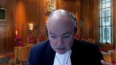
What could Halifax do that would, short of an actual expropriation, because the court maintains the distinction in CPR in Vancouver between an actual expropriation and de facto taking, so it can’t be that.
But short of that, what might Halifax do here that would satisfy the test?
Speaker 3 (01:31:17): what regulatory act amounting to a de facto taking my facts undertake.
Justice Brown (01:31:22): Well, what, no, not what, what could a municipality, I’m not saying that Halifax is going to do this, but what could a municipality do on these facts?
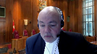
What further would it have to do before the test for a de facto taking is satisfied?
If it’s not enough to do what’s been done so far, what needs to happen before that’s satisfied? What?
Speaker 3 (01:31:49): Well one example that comes to mind, Justice Brown, is building a fence around the property and policing it to prevent anyone from getting in, including the landowner.
Overlapping speakers (01:32:00): The landowner.
Speaker 3 (01:32:00): would still have title, but they would be de facto deprived of any use of their land.
Justice Brown (01:32:10): So offense, okay. Offense.
All right.
Justice Karakatsanis (01:32:13): I guess you’re saying the the landowner can do that put a fence around it and not let anyone uh in to use it.
100 percent.
Justice Brown (01:32:24): Why should the landowner have to do that?
Justice Rowe (01:32:27): And how big is this?
Overlapping speakers (01:32:28): Right? Okay.
Justice Rowe (01:32:29): Is this is this a realistic comment?
I mean, you know, how many million dollars of fencing do you need to keep out people who are being invited in by the municipality?
Speaker 3 (01:32:42): Well, I think the question was whether the landowner could put up a fence, Justice Rowe, and they certainly can’t.
They have not, to the extent that you want me to give evidence.
Justice Karakatsanis (01:32:51): I was not suggesting that they should, by the way, I actually was making a different point.
Justice Moldaver (01:32:58): Could I ask you this, is it enough for a deprivation to be deprived of a legitimate opportunity over all these years to engage in this secondary process because the secondary process itself is never going to happen for all the reasons we’re talking about?
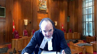
The HMS or whatever wants to keep the land in its pristine shape, so they don’t have to worry about that.
They don’t have to pay the money.
They’re promoting it as a park.
They’re inviting people from the public to come into it to further that.
They promised the government that they were going to do a park.
How much more do you need to at least be able to make an argument on the facts of this case that this secondary proposition is a joke, it’s a façade, and it’s depriving, in effect, the Annapolis people from even making a case out, because that’s what it seems like to me, until such time as the province has the money or the municipal authority has the money to just take it over as a park.
Speaker 3 (01:34:28): Well, you need a willing buyer and a willing seller first of all, but let me leave that for a moment.
So, Justice Moldaver, what it sounds like you’re saying to me is what if the reasons for turning down the request to initiate summary judge or secondary planning, pardon me, in 2016 were improper?
That is an administrative law issue and that is how the decision not to grant the second the initiation of secondary planning in 2016 should have been attacked if that was the true issue.
But what they’re now saying in this de facto expropriation claim is by not granting us the opportunity to enhance our rights and to enhance our investment, you have de facto taken those rights.
That’s the allegation because central to the claim is that 2016 decision.
It’s not the designation back in 2006.
It’s not the designation in 2014.
So, I think, and it’s significant that there was no challenge to the 2016 decision.
There was no request for judicial review of that.
So, you know, to Justice Roe’s initial point, of course, Annapolis, the appellant, has the right to commence an action.
Of course they do.
And HRM, the respondent, has the right to defend its action and the right to bring this partial summary judgment motion.
And here we are.
Justice Kasirer (01:35:55): I think it’s worth adding, I’m not sure it’s the point you’re making, but in cases like Marriner, the claim of de facto expropriation is contrasted with the administrative law challenge to the legality of the conduct of the public authority.
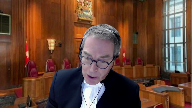
So in that case it was an issue of attacking the validity of the zone laws.
It came up, these twin avenues of recourse was at the core of the Lorraine judgment that the parties have spoken about here, which there was a judicial review avenue described, which on the facts of that case was not open because of a procedural problem and it was distinct from the claim on de facto expropriation.
So is your point that the misdeeds that are laid at the feet of the respondent in terms of trying to get a free park, getting people to use land that they shouldn’t be, isn’t properly addressed under de facto expropriation?
Is that your point?
Speaker 3 (01:37:15): That is my point, Justice Casir.
Thank you.
Justice Martin (01:37:20): Can I get back out please to the test that’s being proposed here.
Do you say there’s any difference between the test in Tenor and the Queen and the CPR test?
Speaker 3 (01:37:32): I think as a result of the factual scenario in tenor, I mean obviously it’s not articulated the same way in both decisions, but the factual scenario in tenor I think speaks to or fits squarely within the CPR test.
So you know whether you adopt Justice Wilson’s reasoning for getting to the result or Justice Estes, you are dealing with a non-title beneficial interest or flowing from that beneficial interest when you talk about what the mineral rights owner was deprived of.
So I think yes they’re consistent, but no they’re not articulated the same way.
Justice Martin (01:38:13): Okay because what gives me some pause is Justice Esty in tenor gives a more narrow reading to I guess what a taking may be than Justice Wilson.
I think that’s my reading but he says something that is is confounding to me a little bit
and and it might have application here which is he refers to basically the the the province getting the benefit of a sort of a negative right to not compensate the respondents for fully taking over their mineral development.
I accept your argument that these were narrow mineral rights that were were were taken because you couldn’t have any access to to using them and they were totally deprived of their of their ability to get the mineral rights because they couldn’t get into the park.
I understand that part of it but that this idea somehow of a negative right not to pay can you explain what you think that means and why that wouldn’t arise in a case like this where you say that maybe what Halifax is acquiring here is that similar negative right not to pay for a park.
Speaker 3 (01:39:39): So I’m hoping I’m clear on your question Justice Martin but what we say is the regulatory the decision by elected municipal council to say no to proceeding to secondary planning at the time in 2016 did not amount to a taking and did not amount to an acquisition.
It just left things as they were as they had been for at that time 10 or 11 years and so there wasn’t really we don’t get to the question of did they have to pay or did they avoid a reason to pay or anything like that.
It’s just a moving through the planning policy the strategy in order over the years that the strategy was in place
so I hope so.
Justice Martin (01:40:30): Okay, so you’re reading Esti to say once there is a taking in the sense of how we’ve been talking about it, there is a benefit to the province because they don’t have to pay for the benefit of the taking, but if there’s no taking, then what he’s talking about doesn’t apply. Yes.
Yes, and I mean.
Speaker 3 (01:40:53): the taking needs to be mirrored with the acquisition.
So the appellants urging that taking writ large is enough.
And we say, no, that because of where de facto expropriation fits in our legal continuum, and because of these provincially mandated statutory planning obligations, that it can’t just be, I can identify a public benefit, whether it’s today, tomorrow, or in a hundred years, that’s not enough for the acquisition.
So it has to be a taking tied to an actual acquisition by the regulating authority.
And I think SD found that.
Justice Kasirer (01:41:31): Can I ask just to follow up on Justice Martin’s question and maybe to get it, Justice Jamal asked the appellant about uses of the land by the appellant under what you describe as the status quo.
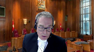
Is anything stopping the appellant from using the land now?
Say lease the land, that was the example Justice Jamal gave.
Is there anything stopping the appellant from leasing the land now?
Speaker 3 (01:42:04): Well, whatever is stopping them now has been stopping them since at least 2006, so the uses of the land that they’ve had since that original urban settlement and urban reserve designation remain in place.
Justice Kasirer (01:42:17): That’s my question.
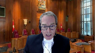
Whether it’s a matter of good business sense or not, it’s they wanna do it, I don’t know.
But legally, is there anything in the current state of affairs, which as you’ve described them, is we have a status quo layered on top of it, a strategic planning policy that hasn’t been yet implemented.
It hasn’t been yet implemented.
In this status quo period, what can the appellant do with that land?
Speaker 3 (01:42:52): So to answer you more directly, Justice Kasir, yes they can lease it.
I mean obviously they would lease it subject to its current zoning, but there’s nothing that precludes them from doing that.
Justice Wagner (01:43:04): I’m sorry, Mr. Ward, but it’s, in reality, they could not lease this land if the zoning by-law does not allow it, the ultimate construction, for instance, or development, they could not do it.
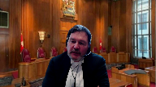
I mean, it’s a false, it’s not an accurate reality.
It’s not a true reality.
Speaker 3 (01:43:31): Well I think Chief Justice you’re speaking to the market.
I mean the question is would you find someone who wanted to lease the land and would they pay a value for it that the appellant would see as worthwhile?
For what purpose?
For what purpose they would lease the land?
Because you asked me if it was possible and I agreed that it was possible.
Justice Wagner (01:43:51): Yeah, but I was following up with this question, but at the end of the day, it’s not a real possibility.
Speaker 3 (01:43:58): As I say, I think that’s a commercial question, Chief Justice Wagner.
Justice Rowe (01:44:02): Let me let me back up to some of the fundamentals.
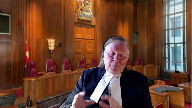
I kind of like to do that because I like to keep things simple.
Try to anyway.
There’s no constitutional question here.
That’s gone.
This is this is this is about the common law and It’s clear that in the absence of any constitutional consideration parliamentary supremacy is is the rule and and the legislature Can expropriate as matter of fact the legislature can confiscate it can take without any compensation.
That’s open to them.
And what the common law has done is to say we will craft a remedy for the citizen Where Where expropriate where the taking of title per se has not occurred, but something which deprives the owner of a sufficient interest such that it amounts to a taking as a practical matter.
We will accord compensation there as a matter of the common law, which of course can be overridden by the legislature without question.
And it’s really about The range of situations in which the court will grant relief to a landowner, who says The the regulatory authority has left me with too little is essentially taken away anything that I had here.
And and and I wish to be compensated because even though they haven’t taken the title.
They’ve taken sort of everything but the title.
And and and and and this is, as the common law always is judicial policymaking because this is different from statutory interpretation.
We’re not saying what’s the intention of the legislature.
This is the stuff we make up because it’s the common law and and There seems to be an artificiality, I suppose, is what I’m getting at in your saying that They’re, they’re left with something.
The owners in this instance are, but it seems to be so little as to amount to nothing.
Except a bare piece of paper that they can hold up and say, yes, I’ve registered this.
But other than that, the municipality is as has set out to use the land for another purpose.
Justice Moldaver (01:46:27): I would call it a false hope.
Throw that into the question.
Speaker 3 (01:46:32): So Justice Roe, we accept obviously that de facto expropriation is part of the Canadian common law and you know it’s bookends, if I can call it that, are the Municipal Government Act or the equivalent planning obligations of municipalities and of course de jure expropriation.
What you’re talking about the landowner having left here in this case, it’s not left, it’s all it ever had.
It bought land that was not zoned for service development, has never been zoned for service development, and is still not zoned for service development.
It’s lost nothing, it’s had nothing taken.
So I understand that the landowner would like to develop its land and see a return on its investment and that’s an important part of our economy.
But it’s not above and beyond the public interest obligations of the municipality or the province and it’s not, you know, it’s not a taking in these circumstances.
It doesn’t, it has never had the rights, no one took them away.
Justice Rowe (01:47:38): When you buy land, there is a risk because zoning authority can affect the value of the land quite significantly, and no one has a right to have their land rezoned or whatever.
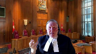
I think that’s very well settled.
What really makes this one different for me is the municipality has said, we’re going to use that for a perk and encouraging people to go in there.
That, to me, is where this thing changes, and it brings in the public policy considerations that sit behind the torch.
Speaker 3 (01:48:18): Well you’ve heard me Justice Roe, we say that that is not a taking of the land that falls within the definition set out in CPR and and that’s a you know that’s a question of for the court to decide of course but Justice Farrar had no trouble concluding a that there were no material facts an issue that could be considered to be a taking or the deprivation and and that you know the the uh the appellant’s de facto expropriation claims um you know had no chance of success and in our submission that was a perfectly legitimate finding given the parameters of the test and given the facts undisputed as to what has and what has not happened you know the erecting of signs on third-party property one of which has HRM’s logo along with PwC the accounting firm and St Mary’s University and the International Development Agency so that big sign HRM’s logo is among several the other sign you’ll hear the one that says trailhead or you’ll see in the evidence it’s on somebody else’s land.
Justice Côté (01:49:30): But Ms. Awad, there’s not only the logo, for instance, in that document that we have, we see that if there is a problem with the trails, people are invited to report to HRM and the phone number of HRM is there, not only the logo.
So how can you say that HRM is doing nothing, is not doing anything significant with the lands?
Speaker 3 (01:49:59): Well, I didn’t say that they weren’t doing anything.
They aren’t.
I mean, they’ve sponsored an entity that posts signs that advertises trails.
I mean, there’s more than one trail on that sign, number one.
But number two, how could a sign at the Canada Games Centre, which is miles from the appellant’s land, how could that amount to a taking of the lands that falls within what Chief Justice McLaughlin referred to as a beneficial interest or flowing from it?
Justice Côté (01:50:29): Ms. Awad, I would come back to the rules of summary judgment motions.
And you said we have the right, Annapolis had the right to take its lawsuit and we have the right to file a summary judgment motion.
I’m not disputing that, but you lost on the summary judgment motion.
The trial judge said that there were material facts in dispute, and he was of the view that the question of law was not that clear.
So, and the only thing the appellant is asking us today is to let them to have their day in court on that.
So what difference should we pay or should the court of appeals should have faith to the motion judge?
Speaker 3 (01:51:12): Well, in our submission, the Court of Appeal paid, set out the appropriate standard of review and paid the appropriate amount of deference.
And Justice Cote, you’ll imagine every plaintiff whose claim has been dismissed by way of a summary judgment motion suggests that you should really let their claims go to trial.
I mean, no plaintiff is ever happy if the summary judgment motion against them is successful.
They all want their claims to go to trial.
That’s not part of our process.
Overlapping speakers (01:51:39): There will be a trial anyway on the other causes of that.
Speaker 3 (01:51:43): and partial summary judgment motions are permitted.
So, you know, I make no apology for having taken that step.
Justice Côté (01:51:52): I’m not asking you to apologize, but I’m trying to think of this in a practical manner.
Justice Karakatsanis (01:51:59): Can I come back?
Go ahead, Justice Malti. Go ahead.
Justice Moldaver (01:52:03): Another question, if Annapolis wanted to say, okay, we’re going to turn it into a park.
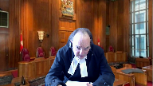
That’s what we’re going to do with this.
We’ll turn it into a park and we’ll, but they can’t do anything as I understand it, according to the Chief Justice, I think.
They couldn’t put in any roads.
They couldn’t put in any buildings.
They couldn’t put up a hotel, nice place to stay while you’re in the park.
They couldn’t do anything except leave the land completely barren, if I understand it, and have some guy at a gate collecting $5 or something for people who want to come on the land.
I mean, what, do you disagree that they couldn’t do anything in that park?
They just have to leave it completely empty, barren as it is.
Justice Brown (01:52:47): So they could build a fence.
Speaker 3 (01:52:49): I don’t dispute what the zoning does and doesn’t permit them to do, but the fact is, Justice Moldaver, they bought barren land with no rights to do anything more than that.
The municipality is not the guarantor of their land speculation.
Justice Karakatsanis (01:53:06): But, Ms. Awad, it just keeps coming back to you answer every question with a focus on zoning.
And this case is not just about zoning.
I mean, I think everybody agrees that zoning itself, by itself, could never amount to or doesn’t amount to a taking in and of itself.
But the allegations here, the action here, is that it’s the zoning in the context of where the land is being used as a park.
And you have to accept, I mean, I think your answer before was, if you accept all of the evidence, if you accept the factual allegations, the question is, is there a, could it possibly succeed in law?
And so my question to you is, bearing in mind the factual allegations that in fact HMR is using the land as a park, what then would be the corresponding loss to the property owner?
But in that context, don’t just talk about zoning.
Speaker 3 (01:54:22): So, if we accept that HRM is encouraging citizens to go on the land.
Justice Karakatsanis (01:54:30): Well, let’s just go further because I think the theory of the case is that you are using it as a land, encouraging citizens to go to the land and doing it that way so to avoid having to take the land and pay for it.
And then the zoning is put in that context.
It’s the claim against you.
Speaker 3 (01:54:53): And I would say, Justice Karakatsanis, that would be Ms. Feeson’s in public office.
That would not- Today, Justice Karakatsanis, that would be Ms. Feeson’s in public office, that would be Ms. Feeson’s in public office, that would not be Ms. Feeson’s in public office, that would not be Ms. Feeson’s in public office, that would not be Ms. Feeson’s in public office, that would not be Ms. Feeson’s in public office, that would not be Ms. Feeson’s in public office, that would not be Ms. Feeson’s in public office, that would not be Ms. Feeson’s in public office, that would not be Ms. Feeson’s in public office,
Justice Karakatsanis (01:54:59): it’s something else doesn’t necessarily mean it doesn’t fit this though either.
So explain to me why it wouldn’t meet the both I guess the taking I’ve already asked you about before but the effect of taking but I’m asking you now to focus on the loss.
Speaker 3 (01:55:14): Sure.
So the landowner has not been deprived of all reasonable uses of its land, even if you accept that that signage and the two signs I spoke of are encouraging citizens to go on the land.
So you need to know that the landowner has not been deprived of all reasonable uses of its land even if you accept that that signage and the two signs I spoke of are encouraging citizens to go on the land.
Overlapping speakers (01:55:31): the
Speaker 3 (01:55:31): the deprivation, the removal of all reasonable uses, and the acquisition, the mirror acquisition of that same beneficial interest.
Justice Karakatsanis (01:55:44): So are you making a distinction then between the loss of a use and the loss of being able to alienate the land and be compensated for it?
Speaker 3 (01:55:55): I’m not sure I understand the question, sorry.
If, in fact-
Justice Karakatsanis (01:55:59): they’d be entitled to money.
If HMR takes the land and makes it a park, haven’t they lost a use relating to their land?
Speaker 3 (01:56:12): That would be, do you’re a expropriation, Justice Kerikatsanis?
I understand what you’re asking me.
I mean, if they take the park, if they acquire the park-
Justice Karakatsanis (01:56:19): effectively take the park.
Justice Brown (01:56:21): Right.
This is Justice Esty’s point, is it not, in tenor, right?
Well, Justice Esty, I mean, I…
Justice Karakatsanis (01:56:29): I think in tenor, I mean, it was crown land, so it was easier to make a connection with the game, but that’s not, but it is the same issue, I guess, with respect to the
Speaker 3 (01:56:40): Sure, well and Justice Esty found that there was de facto expropriation in that circumstance, but the the effect, the the removal of all reasonable uses on that mineral rights holder was in my submission absolutely clear.
And in this instance you don’t have any evidence of removal of all reasonable uses.
You have a landowner saying that they can’t move forward and develop their lands because they weren’t granted the right to initiate secondary planning in 2016.
Justice Brown (01:57:13): You know, in light of the document at tab 12 of your friend’s condensed book, this is the advertisement for REC Day.

There’s kind of a, Council, I’m just struggling, there’s kind of an otherworldly quality to…
Speaker 3 (01:57:36): I can’t hear.
Justice Wagner (01:57:41): We can’t hear you.
OK, thank you.
Justice Brown, we can’t hear you.
Justice Brown (01:57:57): Good job, Chef.
Speaker 4 (01:57:58): Monsieur le Justicier Brown, peut-être que le switch de toggle a été annulé.
Justice Brown (01:58:10): How’s that?
Overlapping speakers (01:58:11): Yeah, much better.
Justice Brown (01:58:12): I apologize, Chief Justice, I apologize, Ms. Awad.
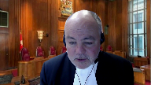
I’ll just say, in light of the document at tab 12, the advertisement for REC Day, there’s kind of an otherworldly quality to the submission that nothing has been lost here.
The appellant’s land is described as Blue Mountain Birch Cove Lakes Regional Park, and it’s inviting the public there for a hike.
I just want to signal to you that I just find your submission kind of unrealistic in light of that document.
Now, that’s not for me to decide, ultimately.
That would be for a trial judge to decide, but it seems to me to be at least an arguable issue.
Even on your understanding of the test, there seems to be an interference, and it’s not merely with a right to use, but with a right to hold.
That’s at least suggested by this, because the right to hold is, of course, is what’s at stake in a trespass.
It can also interfere with the right to use, but even on your narrow understanding of CPR in Vancouver, I’m sure that it’s not obvious to me that it’s not met on these facts.
Speaker 3 (01:59:52): Well Justice Brown I don’t know what more I can say.
I mean certainly you know if HRM’s rec day advertisement did encourage trespassing on the land that is you know not ideal obviously
but I revert to my initial submission which is trespassing is not taking in the context of
and I say whatever reading broad or narrow of the CPR test as it’s currently worded.
Justice Brown (02:00:19): I would have to be trespassed with a fence and all those other things.
But I guess what you’re saying.
Justice Jamal (02:00:25): All right. Sorry.
Overlapping speakers (02:00:27): No, go ahead, Justice DeMille. Sorry.
Justice Jamal (02:00:29): I guess what you’re saying is that it is an interference with the use and enjoyment of the property, but it isn’t a removal of all reasonable uses of the property, that it is a very, very high threshold for the de jure expropriation and that couldn’t be met by inviting people to picnic or go hiking on the property.
Speaker 3 (02:00:54): Correct, Justice DeMalle, and for that reason we also say it’s frankly not a material fact to the task that this court is dealing with.
But isn’t that for the trial judge to decide whether this…
Justice Brown (02:01:05): Subscribe to our channel for more videos like this!
Overlapping speakers (02:01:05): I understand.
Justice Brown (02:01:06): whether the threshold is, whether it’s to a degree that that is denoted by the threshold.
Speaker 3 (02:01:14): Well we say no.
We say it’s for the trial judge to decide for the other claims but not for the de facto expropriation claim given where it sits in our in our continuum in the common law.
Justice Martin (02:01:25): And can we get back to the second part of the CP test in terms of other reasonable uses?
I find myself struggling with Mariner and how to go how to conceptualize what those other reasonable uses may be and in one spot or one argument would be that here Annapolis just lost the chance of a different zoning.
But if we start with fee simple, the normal fee simple ideas, you have the whole bundle of rights and you can do everything.
So when we’re dealing with that second part of CP, how do we factor in zoning and regulation and the fact that as Justice Cromwell said it’s a complex regulatory context in which the normal fee simple rules about land have been eclipsed.
Speaker 3 (02:02:28): Well, as I submitted earlier, Justice Martin, that’s what I say is one of the bookends on this de facto expropriation legal principle, and you’re absolutely correct.
I mean, owners of land in Canada and in Nova Scotia, where every inch in every municipality has to be covered by a municipal planning strategy, are automatically subject to intensive regulation.
Justice Cromwell recognized it clearly, and ownership carries with it the possibility of stringent land use regulation that is different than when you bought it.
So you’re subject to changes, and the zoning up and down does not lead to compensation.
So those principles, I submit, are all in one bookend.
That is the fence against which de facto expropriation needs to lean up against but not cross over into.
So you can’t have a municipality fulfilling its municipal planning strategy obligations, which are dictated by the provincial government, then opening itself up to de facto expropriation claims, because that would be, in essence, the court superimposing its rules on what the legislature has done.
And then the other bookend is de jure expropriation, when the expropriation legislation in all the common law provinces, you know, kicks in and, you know, the municipality, if it wants to acquire the land, does follow the process.
So we say that the CPR test is sound, it’s appropriate in the common law landscape, and that it does not need any revision or revisiting, nor, frankly, are the Vavilov principles for overturning it met in any way in this circumstance.
We have soundness, we don’t have any courts indicating that they’ve had trouble applying the test.
We’ve seen it applied in a variety of cases, not just the ones we’ve been talking about today, but we saw it applied to a hydraulic fracking case, the Lynch case in Newfoundland, we saw it applied in the paving case in Newfoundland as well.
And it’s, you know, the claimant doesn’t always win, but the government doesn’t always win.
And in some instances, the matter was left for trial, as you hear my friend, Mr. Griffin, saying should happen in this case.
Overlapping speakers (02:05:06): Is Lynch correctly decided in your view?
Speaker 3 (02:05:08): I think it is.
I think that appropriation of the groundwater by the municipality was both a deprivation and an acquisition.
Justice Brown (02:05:20): Okay.
Speaker 3 (02:05:24): So, and as I say, we don’t see any judicial criticism and in our submission, that also plays into the third Vavilov principle, which requires criticism from three different sources.
And once you’re missing one, we submit that it doesn’t, it doesn’t meet the Vavilov test.
We rely heavily, as you would expect, on the Hartell Holdings case, not because it specifically is a de facto expropriation case, but because the facts are so parallel to what you what you see in this case.
It’s remarkably similar.
And, you know, Justice Wilson’s decision dealing with both the nature of the planning documents and the fact that those policy documents didn’t trigger the obligation to purchase.
And, you know, in that instance, we submit the the court was correct.
And, you know, the case was decided appropriately in, again, the context of the Canadian common law as it stands.
Now, I didn’t hear my friend arguing it today, maybe I missed it, but in the in the materials filed, he was suggesting that the acquisition element should be entirely eliminated.
That as long as in the eye of the landowner, its reasonable uses have been removed, that would be enough.
And we submit that that is just going too far and and is not at all consistent with with the the principles that are applicable.
We also submit that there’s no basis to borrow from the civil law and between its civil code and the Quebec Charter of Rights and Human Rights and Freedoms, you’re dealing with a different legislative makeup and one that in our submission doesn’t lend itself to a blending in with what is the current common law of de facto expropriation.
We also say that there’s no need to refer to international law in these circumstances, for the reasons that we’ve set out in more detail in our factum.
So in summary, Chief Justice, Justices, we say there is no basis for reformulating the well established two part task that goes dates back as far as Manitoba fisheries.
And there’s no reason to interfere with the Court of Appeals decision to dismiss the appellant’s de facto expropriation claims.
We say there was no regulatory act, there was no taking, nothing has changed since at least 2006 and and for that reason we respectfully request that the appeal be dismissed with costs to the respondent.
Thank you.
Justice Wagner (02:08:05): Thank you very much.
Ms. Anderson.
Speaker 5 (02:08:11): Good morning Chief Justice and Justices.
The Attorney General of Canada has intervened in this matter to make two points.
First is that the legislature should be entitled to choose whether to provide compensation for the effects of its regulatory actions.
And second is that the two-part test for de facto expropriation set out in CP Rail should be maintained.
Now turning to the first point, legislative choice, public bodies must be permitted to regulate in the public interest without fear of liability for compensation absent exceptional circumstances.
And legislatures may speak to compensation through expropriation legislation or by otherwise explicitly providing or denying compensation.
So for example some legislatures have chosen to provide compensation for extraordinary effects caused to property owners by the protection of critical wildlife habitat.
So it falls to the legislature to balance in those cases the public benefits with any time you want to.
Justice Rowe (02:09:12): Anytime you want to, you can abolish the tort.
It’s as simple as that.
It’s parliamentary supremacy.
Speaker 5 (02:09:21): right, that’s right.
And I think that’s where I’ll leave it on in terms of the legislature’s choice.
And I turn then to the CPR test.
So generally, there is no right to compensation for the effect of a valid regulatory action.
But the the CPR test sets out the exceptional circumstances where there may be compensation for that action.
And the theory behind these two criteria has perhaps never been fully articulated in the jurisprudence.
But the courts seem to have developed the test to respond to equitable concerns within the confines of public law and legislative supremacy.
So the courts have long recognized that it would be unfair to allow public bodies to acquire beneficial interests solely through the exercise of their regulatory powers.
But to be clear, we’re not saying that this is an unjust enrichment case.
We are just saying that the courts have been applying the parallels, some parallels with unjust enrichment into the de facto expropriation test.
Now Justice Huband in steer holdings at paragraph six, he said that the general rule that compensation is not payable for regulatory limits, smacks of unfairness.
And as he put it, the courts have strained to award compensation for the taking of property by compulsory acquisition.
And this this compulsory acquisition is the critical component that differentiates non compensable regulation from a de facto taking.
Now equity may assist a little bit in identifying a beneficial acquisition.
In unjust enrichment, a beneficial acquisition must be a tangible one.
Now some courts have spoken to the negative benefit being a spared expense.
But the corresponding question with that is a spared expense for what what has the expense purchased.
And so in Tina in Manitoba fisheries in Lynch and into Kaiser, something was acquired in all of those cases, whether it was we’re reacquiring mineral claims, acquiring goodwill or the groundwater, or in fact, acquiring use and occupation of the property.
Overlapping speakers (02:11:39): I’m sorry, that’s simply wrong.
Mineral claims weren’t reacquired in Tenor.
Access was cut off.
Speaker 5 (02:11:46): Well, as Justice Esty put it, he said that the rights to the mineral claims were partially reacquired by the Crown, and you’ll find that in tab 9 of our condensed book.
Overlapping speakers (02:11:59): But he also talked about effect.
He talked about effect.
You’ve got limited time, but you really skated over tenor.
Speaker 5 (02:12:06): Okay, well I mean as you’ll see in our outline we have a chart we that sets out how we see in each case what was acquired versus what was removed and the court and tenor the majority of the court really did speak about reacquiring the mineral interest.
Those mineral interests could no longer be used by the by the tenors but they could be used by the Crown if they wished.
So I’ll turn then quickly into how these two criteria respect legislative supremacy.
Where there’s a removal and an acquisition the courts ask whether there’s an express or clear provision in the regulatory scheme that permits the acquisition without compensation or as we put it in our factum whether there’s a juristic reason for the acquisition to be free of cost and if not the rule into Kaiser’s can be applied.
And I see that that’s my time so I will finish my submissions there.
Thank you.
Justice Wagner (02:13:09): Thank you very much Ms. Anderson.
Mr. Lawson?
Speaker 6 (02:13:17): Good afternoon, Chief Justices, Justices.
I propose to start my submissions by noting that Ontario submits that this court should not alter the existing two part C.P.R. test for de facto expropriation, requiring both a deprivation of all reasonable uses, as well as the acquisition of a beneficial interest in the property or flowing from it.
We submit or I would submit in connection with a question from Justice Kasser that.
The suggestion that the the.
Characterization of the misdeed of trying to get a free park is not properly addressed in the de facto expropriation analysis.
In this case, Annapolis has suggested that Halifax is.
Justice Wagner (02:14:09): I’m sorry, Mr. Austin.
I’m sorry.
I’d like to remind you that the interveners should not discuss or decide or argue on the merits of the case.
Speaker 6 (02:14:20): I apologize for that.
What I’m suggesting is that it’s open to a property owner who alleges or accuses a public authority of illegality in its actions, or alternatively that its actions have been taken improperly, that it is open to such a property owner to either apply for relief before the tribunal, in this case it would have been, or in Nova Scotia it would be the Nova Scotia Utility and Review Board. Again.
Justice Wagner (02:14:56): Again, I don’t know why you continue to argue on this case, you know, we’ve been saying the same message for quite a few years now.
We appreciate and we want to hear interveners.
We need their arguments, provided that they don’t comment on the merit of the case.
Speaker 6 (02:15:15): I apologize.
In that case, I’ll move on from from that submission to suggest that the changes to the CPR test as proposed by the appellant we submit are matters that are more properly addressed by legislators as opposed to by the courts.
Put another way, the proposed changes Ontario submits are not incremental as discussed in this court’s decision in Saliotero specifically at page 670.
We have expanded on this submission at paragraphs 16 through 22 of Ontario’s Factum.
We submit next that property owners who wish a legal avenue to address either illegality or the inappropriateness of planning controls or the actions of the planning authorities can properly be addressed either at the tribunal level or alternatively through judicial review.
And on the issue of motive or intention as it’s been referred to occasionally in submissions today, we submit that there is no need to import a consideration of the public authority’s motive into de facto expropriate expropriation analysis as there are existing alternative legal avenues available to do so and make inquiries in respect of the motives or intentions of the the public authority specifically once again via judicial review or alternatively through through a claim for misfeasance of public office.
We submit that because the Lorraine case restricted itself to the question of whether or not the lower court had properly dismissed the claims that the bylaws and issue were a nullity and inoperable given the delay in advancing the claim.
And note that the claims for indemnity for disguised expropriation and any issues relating to motive were not before the court and as a consequence Ontario submits that the Lorraine case does not provide any new considerations for the common law test for de facto expropriations and once again the submission is addressed at paragraphs 31 through 34 of Ontario’s factum.
Subject to any questions those are my submissions on behalf of the AG of Ontario.
Justice Wagner (02:17:55): Thank you Mr. Lawson.
Mr. Phuong Phan.
Speaker 4 (02:18:01): Hello, can you hear me?
Justice Wagner (02:18:07): Yes, please go ahead.
Speaker 4 (02:18:09): Justices, expropriation means the compulsory acquisition of property by government, and so even for de facto expropriation, government must acquire what amounts to a beneficial property interest.
It’s no more complicated than this because of the underlying rationale.
Liability for compensation and expropriation is not based on fault, because fault implies some sort of wrongdoing, negligence, or error, whereas expropriation concerns the lawful exercise of government’s power.
Instead, the basis for compensation is that government has acquired private property that has value, and across our jurisdictions, the primary head of compensation is usually market value, not value to owner as I heard previously, but market value, which is defined as on the objective standard of willing seller, willing buyer, and so government becomes the hypothetical willing buyer who pays fair consideration for the incidence of property ownership that it acquires from a citizen.
And contrary to the appellant submission, the test is not new, the acquisition test is not new, nor was it created by this court in CPR.
In fact, the opposite is true.
De facto expropriation cases have often been defined by the symmetry of loss to an owner and corresponding gain by the state.
This is what Chief Justice, this is what Justice Hubbins said in Steer Holdings when he said that to qualify for compensation, there must be an expropriation if not in name then in effect, and the limitation on usage must be balanced by some corresponding acquisition by the authority.
Similarly, Justice Gouge in A&L Investments for the Ontario Court of Appeal made a statement along the same lines when he said that for the presumption of compensation to apply, legislation must create what is in essence an expropriation.
The state must acquire the property taken from the plaintiff either for its own use or for the purposes of destruction.
And so with that, Justices, BC submits that property acquisition is the bright line at which point government regulation becomes de facto expropriation.
Anything short of this is non-compensable because in this country, the impact of regulation on private interests is tolerated in favor of the public good.
However, where property rights are acquired, either explicitly or effectively, compensation should be paid.
And so to illustrate my point, consider the example of recent COVID-19 public health orders, which have been issued across the country to mitigate or abate the transmission of the virus.
We know that these orders have had a significant impact on property owners and their related businesses.
And yet, despite the severity of these orders, which has led to the closures of businesses such as gyms, bars, and restaurants, they by no means constitute a de facto expropriation. Why?
Because no underlying property interest was acquired by government.
Justices, deciding if, when, and how to pay compensation for the impact of lawful regulation are questions best left to the legislature.
Justice Karakatsanis (02:21:31): Can I ask, you said it had to be a property interest and I’m wondering exactly how you would define that?
Would that then include the goodwill of a business, of a fishery business?
Speaker 4 (02:21:42): Well in the case of Manitoba Fisheries it did, that did meet the definition of property in that case Justice Carrick-Catsanz, yes.
But there’s been much talk today about what a benefit must mean and BC says that judges are in a good position to determine whether or not the incidence of property ownership and beneficial property ownership.
So that means that title to the property remains in someone else’s name but that government or another party can use and enjoy that property to their benefit.
Justice’s BC submits that the question of did government acquire a beneficial interest in property does three things.
One, it provides clarity to the law of de facto expropriation which is rooted in property law.
Two, it can be applied consistently by courts who are well equipped to determine whether or not property or the incidence of property have effectively changed hands.
And three, it avoids a proliferation of claims by claimants who seek to make government the insurer for their speculative delayed or failed investments.
And I see that I am almost out of time.
Those are BC’s submissions.
Thank you very much.
Justice Wagner (02:22:58): Thank you, Mr. Fan.
Randy Christensen.
Good afternoon.
Speaker 7 (02:23:04): We act for eco justice Canada.
This court has said that protecting the environment is one of the great challenges of our time.
If this court revises or clarifies the test for de facto expropriation is urged by the appellant that challenge will become even more difficult.
My comments today will focus specifically on concerns from revising or clarifying the beneficial interest component of the CPR test.
The appellants interpretation of beneficial interest will very likely result in government liability for ordinary regulatory actions.
In response to this concern the appellant has claimed a paragraph 17 of their responding fact and that its proposal preserve it preserves government’s ability to regulate in the public interest.
This is not the case in our submission.
The appellants proposed test or clarification to the test is found at paragraph 109 of its main factor.
And it would be that the standard of an acquisition of a beneficial interest in the property or flowing from it would be considered satisfied.
If the regulating authority or even the public generally obtains an advantage that advantage itself could be intangible or tangible and further the benefit to the government or the public does not even have to be the same as the interest alleged to have been taken from the injured party.
As an initial comment this standard is equally or more vague than the standard under CPR the definition of an advantage is something that helps you to be better or more successful than other people.
And in our submission it would not offer no meaningful guidance to lower courts or regulatory authorities functionally the test proposed by the appellant is so broad that it comes close to being the equivalent of eliminating the requirement altogether.
As most regulation regulations affecting private interests would be caught on a standard of an intangible advantage flowing to the public generally under current law property owners are putting forward aggressive claims of supposed beneficial interests that take direct aim at public health and environmental regulations.
In club pro the owners of an entertainment venue brought several claims against a prohibition on indoor smoking rooms in Ontario, as part of their de facto expropriation claim the owners claim the restrictions took their property.
The only government interest enhanced in that case was the protection of public health and compliance call plaintiffs who were denied environmental approval under environmental assessment legislation.
The company brought a takings claim asserting that BC and Canada, obtained a benefit in that they quote no longer had to face criticism from constituents and other individuals.
And in Altius claimants who purchased a royalty interest in coal after federal emissions regulations had been announced claim the regulations took their property and that Alberta and federal governments benefited because the measure would result in the protection of Albertans health increase productivity, and it would improve air quality and avoid emergency room visits and deaths.
To date, all of these claims have been rejected by the courts using the CPR standard, although Altius remains under appeal.
But that would not be the case under the standard proposed by the appellant these interests would meet the appellants proposed standard of an intangible advantage occurring to the government or the public generally.
It is our view that the CPR standard is currently interpreted achieves the correct balance between property rights and the protection of public health and the environment.
Even if this court decides for the guidance about the beneficial interest standard is needed.
We urge this court to reject the appellants proposal subject to any questions.
Those are my submissions.
Justice Wagner (02:27:04): Thank you very much, Ms. Rebecca Jones for reply.
Speaker 8 (02:27:10): Thank you.
Justice Asanopoulos has one issue in reply and that is to address the submission by my friend at HRM that there is no park and that at most the city has invited trespassing onto the lands.
I’m going to break down the reply in three parts.
The first is that as Justice Brown pointed out and as found at tab 12 of the condensed book it is Halifax that refers to the land as a regional park and invites hikes on that land.
Second, whether or not Halifax is using the lands as a park is a material fact.
If HRM wants to say that there is no park, if they want to say that their signs or their website don’t mean what they say then they can attempt to establish that at trial, not on a summary judgment motion.
And finally as to the submission that all that is being done here by the city is inviting trespass, this is an argument that was advanced by the city in the Benjamin decision by the Quebec Court of Appeal and that’s a decision where the city as we say here wanted lands for a park and began to erect pathways, a lamppost on the claimant’s lands.
In that case the public authority advanced the very argument Council for HRM advances here and that is that it was up to the property owner to put an end to the trespass and that it did not constitute an expropriation.
And the Quebec Court of Appeal held at paragraph 51, after all these years the city argues with a certain lack of embarrassment that it is up to the citizen to take steps to compel it to respect its property rights.
Such conduct on the part of a public administration is unacceptable and the court found that this type of use by the city as a park removed all reasonable uses of the claimant on its lands.
Finally the fact that HRM may be inviting trespassers onto the land does not make that fact.
That is an independent issue.
It is also relevant to de facto expropriation.
The fact that it is trespassed does not mean it is not a material fact going to de facto expropriation.
Thank you.
Those are our submissions and reply.
Justice Wagner (02:30:00): Thank you very much.
So I’d like to thank council for their submissions.
The court will take the case under advisement.
Thank you very much.